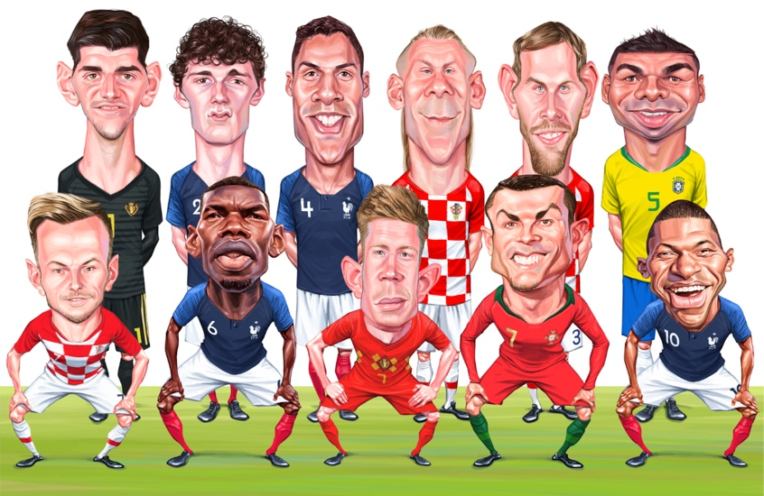

Layout de conteúdo
Toujours sans Neymar, le Paris Saint-Germain a créé l'égalité lors de la deuxième confron tation préparatoire. Les champions de France ont été 1: 1 contre Nuremberg samedi au M ax-Morlock-Stadion en Allemagne. Sarabia, à la tête, et Valentini, ont marqué les buts du match aux tirs au but.
Números e Dados
Lista de jogadores que atuarão na partida Brasil X Bélgica. Liste des joueurs qui joueront dans le match Brazil X Belgium. Liste des joueurs qui joueront dans le match Brazil X Belgium. Liste des joueurs qui joueront dans le match Brazil X Belgium. Liste des joueurs qui joueront dans le match Brazil X Belgium. Liste des joueurs qui joueront dans le match Brazil X Belgium.
Lista de Jogadores
Lista de jogadores que atuarão na partida Brasil X Bélgica. Liste des joueurs qui joueront dans le match Brazil X Belgium. Liste des joueurs qui joueront dans le match Brazil X Belgium. Liste des joueurs qui joueront dans le match Brazil X Belgium. Liste des joueurs qui joueront dans le match Brazil X Belgium. Liste des joueurs qui joueront dans le match Brazil X Belgium.

|
nascimento | time | jogos | gols | Aprov. |
|---|